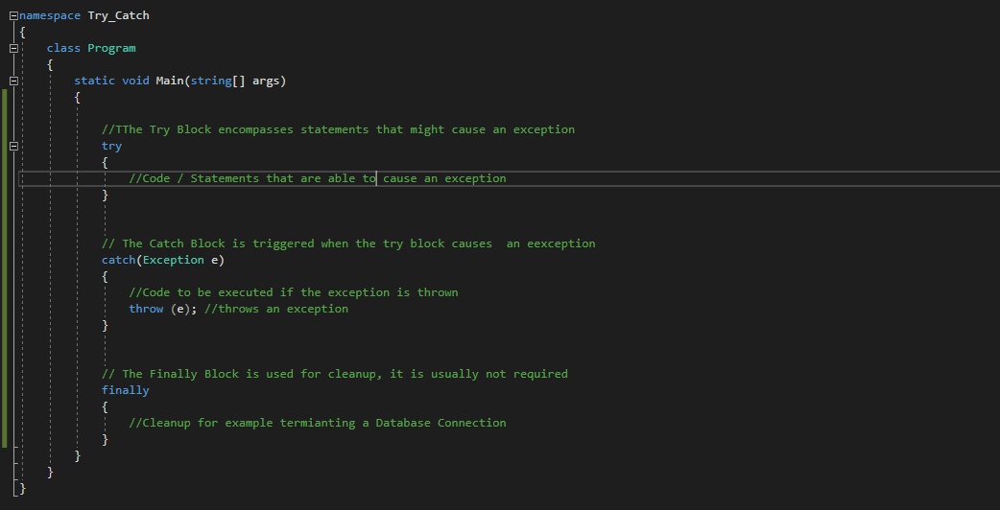
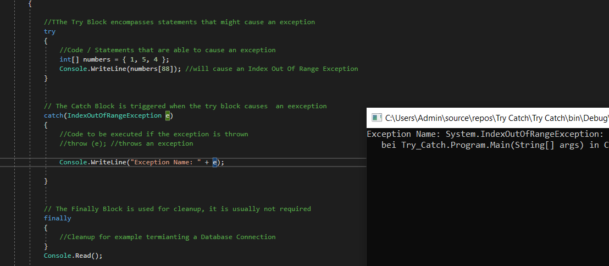
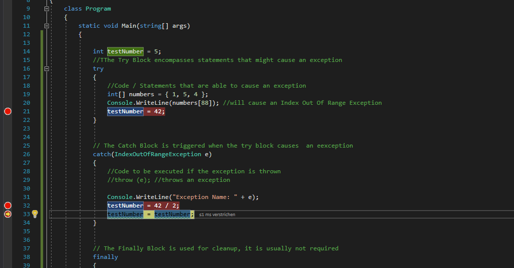

01 Fehlerarten
Syntaxfehler: Fehhler die beim Schreiben des Codes auftreten und von VS direkt angezeigt werden.
Laufzeitfehler: Fehler die zur Laufzeit des Programms auftreten, d.h. wenn keine Syntaxfehler vorliegen und die kompilierung erfolgt ist und das Programm ausgeführt wird. Diese Fehler treten z.B. auf, wenn man versucht auf eine Datei zuzugreifen, die nicht existiert.
Logische Fehler: Diese Fehler treten auf, wärhend das Programm verwendet wird. Hierbei handelt es sich z.B. um Abläufe, die der Entwickler u.U. nicht vorausgesehen hat, oder falsche Annahmen des Entwicklers (z.B., dass eine Methode immer den selben Wert zurückliefert, tut Sie dies nicht führt es zu Problemen). Häufig handelt es sich hierbei um Nutzereingaben, mit denen das Programm nicht umgehen kann und die der Entwickler nicht bedacht hat (und auch nicht durch Exception Handling abfängt). Der Logikfehler muss also im Code korrigiert und das Programm neu kompiliert werden.
02 Strukturierte Fehlerbehebung
Oft genügt es, an der enstsprchenden Stelle einen Debug.Log() (Unity), oder einen Console.WriteLine() zu platzieren um zu prüfen, ob das Programm bis zur entsprechenden Stelle durchläuft. Jedoch ist diese Maßnahme nicht immer ausreichend und uns stehen bessere Tools zur Verfügung, wie in den nächsten Unterkapiteln beschrieben wird.
03 Exception Handling
Durch einen sogenannten Try Catch block wird auf Mögliche Fehler direkt reagiert, damit das Programm weiterläuft und der Nutzer im besten Fall gar nichts von dem auftretenden Fehler mitbekommt.

Wir versuchen nun gezielt eine Exception zu erzeugen (zur Veranschaulichung), indem wir ein Array mit einem Index aufrufen wollen, der nicht exisitert. 
Uns ist an dieser Stelle bereits der Finally Block aufgefallen: Dieser wird verwendet um aufzuräumen. Aufräumen umfasst in diesem Bezug aktionen wie das freigeben von Resourcen (Garbage Collector) oder schlicht das trennen einer Datenbankverbindung. Der Finally Block ist jedoch nicht zwingen notwendig und kann ausgelassen werden.
04 Fehler aufspüren, beseitigen & Programmablauf kontrollieren
Mit Hilfe des Visual Studio Debuggers können Breakpoints gesetzt werden, mit deren Hilfe der Programmablauf, sowie die Werte von Variablen und die Parameter von Methoden kontrolliert werden können. Der Debugger ist ein mächtiges Tool um Fehler zu beseitigen und zu finden, er wird daher auch von anderen Programmiertools (z.B. IntelliJ IDEA) für z.B. Java angeboten.
Die roten Punkte am linken äußeren Rand sind Breakpoints. Durch das Drücken von F5 kann man zum nächsten Breakpoint springen und die Werte von z.B. Variablen prüfen, indem man mit der Maus-Cursor über diesen hovert.

Für die Variable testNumber in der hervorgehobenen Zeile im Bild wird uns durch das darüber hovern mit der Maus der Wert 21 angezeigt. Dadurch wissen wir, dass das Programm bis zu diese Punkt wie erwartet abläuft.

Dies ist nur ein kleines Beispiel, dass das generelle Vorgehen beim Debugging zeigen soll und es wird dringend empfohlen sich den Debugger genauer in der Microsoft Documentation anzusehen um mit diesem umgehen zu lernen!
05 Zusatzinfo zum Unit Testing in der Software-Industrie
In der Industrie besteht oft die Philosophie Schnittstellen und jede Methode einzeln auf ihre korrekte Funktion zu testen, um für jeden Fall einen reibungslosen Programmablauf zu gewährleisten. Genannt werden diese Tests “Unit Tests” (hauptsächlich Methoden testing) und Smoke Tests (testen von Grundlegenden Funktionen um zu prüfen ob das System Stabil läuft oder “abraucht”). Das exzessive Überprüfen des Codes sorgt hierbei für einen erheblichen Mehraufwand in der programmierung (es werden oft gleich viele oder sogar mehr Zeilen Code zur Prüfung verwendet, als für den Code des eigentlichen Projekts benötigt werden).
In der Spielentwicklung benötigen wir dies i.d.R. nicht, da in unserem Spiel auffällt, wenn ein Ablauf oder sogar eine Grundlegende Mechanik nicht funktioniert.
Quellen und weiterführende Links
01 https://docs.microsoft.com/de-de/dotnet/visual-basic/programming-guide/language-features/error-types
02 https://www.dotnettricks.com/learn/csharp/a-deep-dive-into-csharp-errors-or-exceptions-handling
03 https://www.dotnettricks.com/learn/csharp/a-deep-dive-into-csharp-errors-or-exceptions-handling
04 https://docs.microsoft.com/de-de/visualstudio/debugger/debugger-feature-tour?view=vs-2019
https://docs.microsoft.com/de-de/visualstudio/debugger/quickstart-debug-with-managed?view=vs-2019
https://support.microsoft.com/en-us/help/815788/how-to-trace-and-debug-in-visual-c
05 https://www.c-sharpcorner.com/article/a-basic-introduction-of-unit-test-for-beginners/
http://softwaretestingfundamentals.com/smoke-testing/